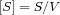

In COPASI, most of the time there are several ways to do something and you just choose the way you prefer. This is especially true for defining the elements of the model.
Actually if you are just defining a model that has a single compartment, you will most likely not even bother to add the compartment explicitly, but we will come back to this in the
Species and
Reactions sections.
Although you will probably not add compartments too often, it is good to know how it is done, especially since adding other components of the model, e.g. species or reactions, works essentially the same.
There are three methods to add a new compartment to a model, but for all three, we have to navigate to the Compartments branch of the object tree which is located under the Model->Biochemical branch. So first open the Model branch and there open the Biochemical branch by clicking on the expansion sign in front of the branch name, or by double clicking on the branch name.
If you start with a new model and you select the Compartments branch, you will get a nearly empty table with eight columns (see above). The columns are named #, Name, Type Initial Volume, Volume, Rate, Initial Expression and Expression. The # column contains the index of a given compartment in the model. Note that the index for the 'New Compartment' is not given indicating that it is not part of the model. Name is the actual name of the compartment. The Type specifies how the transient volume of the compartment is determined whereas the Initial Volume and the Volume columns show the volume of the compartment before any calculations and after re-calculation, respectively. These two values, given in the volume units defined in the
model settings dialog, should be the same if the type is set to fixed. The Rate column show the rate of change of the compartment (if it has been set by a calculation). The Initial Expression and the Expression columns show the mathematical expressions used to calculate the initial compartments volume and the transient one, respectively. These fields are empty if no expressions has been set.
The most obvious way to add a new compartment is to click the New button on the bottom of the window. This will create a new compartment that is added to the table with the index of 1.
|
| Compartment Table with new Compartment |
To create multiple compartments with the default values just keep pressing the New button.
|
| Compartment Table with deleted Compartment |
Any compartment you have created can be deleted by selecting the whole table row or clicking into the # cell that contains the compartment you want to delete and clicking the Delete button. This deletion is executed immediately if there are no consequences to other model components. If there are consequences such as the deletion of contained species. A dialog box will appear informing you of such side effects and ask whether you want to proceed or cancel the deletion.
The Delete All button is just a convenience function to delete all compartments. All compartments will be deleted and a confirmation dialog will appear for each compartment which deletion has further consequences to the model. You are able to individually cancel or confirm any deletion.
The most convenient way to add a compartment is to modify any cell in the e.g. the name cell by providing the desired the name of the new compartment. Once you leave the cell by either hitting the return or the tab key or by clicking somewhere else, the compartment is added to the model and a new default row is created. Actually hitting the return key after typing the name brings you directly into the next row and you can continue adding compartments until all compartments are defined.
The third way to add a new compartment is to double click on an empty row in the table. This is essentially the same as clicking the New button and double clicking on the newly added compartment entry.
|
| Compartment Definition Dialog |
Double clicking on any compartment entry in the table will bring you to another input dialog that lets you specify the parameters of the compartment (see above). For each compartment, you are able to change the name of the compartment, the type of simulation specifying how the compartment volume, or its rate of change, will be determined, and the initial volume.
The field labeled Volume specifies the volume the compartment has right now, e.g. during or at the end of a simulation. Since the current version of COPASI does not support variable compartment volumes yet, this will always be the same as the initial volume.
As stated above, compartment volumes don't have to have a constant value but they can be reassigned during e.g. a time course simulation depending the values of one or more model entities. In order to specify whether a compartment has a constant volume or the volume is calculated on the fly according to a mathematical expression, the drop down list called Simulation Type can be used. It contains three entries:
Compartments Simulation Types| Name | Description |
| fixed | the volume of the compartment has a constant value (which corresponds to the given initial value) |
| assignment | the volume of the compartment is determined by evaluating the given mathematical expression |
| ode | the rate of change of the compartments volume is determined by an ordinary differential equation |
If you want the compartment to be calculated from a given mathematical expression you select the entry called assignment from the Simulation Type drop down list. This enables a text field where the mathematical expression can be entered.
|
| Compartment Widget with Assignment Rule |
Warning: Please note, it is not possible in COPASI to calculate the volume of a compartment through an assignment based on the concentration of a species contained in the compartment. The reason for this restriction is that COPASI preserves the amount of a species during calculation, which leads to the following equation for the concentration  and therefore . Obviously, specifying any assignment for the compartment volume like would lead to conflicting values.
Likewise if you want the rate of change of the compartments volume to be determined by an ordinary differential equation (ode) you select the entry called ode from the drop down list.
Not only the transient volume of a compartment can be specified as a mathematical expression (see above), but also the initial one (see below). If you want to specify such a mathematical expression for the initial volume of a compartment, check the check box called Use Initial Expression. An initial expression can only be specified if the Simulation Type drop down list is either set to fixed or to ode. If the list is set to assignment, the given assignment automatically acts as an initial assignment and there is no need to specify an additional initial assignment.
|
| Compartment Widget with Initial Assignment |
The mathematical expressions that can be specified for rules and initial assignments may contain the same elements as the expressions used to defined function definitions. For a detailed description of the elements see
User Defined Functions. When it comes to referencing values of other model entities within mathematical expressions, there is a slight difference between the mathematical expression for a rule and that for an initial assignment. The mathematical expression for a rule may reference transient values of other model entities whereas the mathematical expression for an initial assignment may only reference initial values of other model entities.
As you might already have noticed, this dialog for changing compartment parameters, associated with the individual compartment, lives in the object tree. So if you want to change the parameters, you can also navigate to the leave in the object tree that represents the compartment you want to change instead of double clicking on an entry in the compartment table.
|
| Compartment Widget with ODE Rule and Initial Assignment |
If there are already species defined that are part of the compartment being edited, they will be listed in the text widget at the bottom of the dialog called Contained Species. Otherwise, you should add new species.